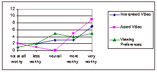

September 2002
Verbal Protocol Analysis
A protocol for assessing the transcriptions was developed based on the study
objectives. As shown in Table 6, eight categories were established with six
categories having positive or negative as subcategories. One category coded
direct comparisons between the two translation types and the last category was
a simple count (see 50 for categories and a sample comments). Due to technical
failures, only 13 participants have full data sets and only these full sets
are included in the analysis. Five of the participants viewed the ASL video
first. Also, only the analysis of the verbal protocols collected during the
two video viewing sessions is reported here.
Two operators were instructed on how to use the interface and the meaning of operationally defined categories. The intraclass coefficient (ICC) was high (ICC = .88, P<0.05) across categories. This level is sufficiently high to allow the remaining analyses to be carried out by one individual.
Results Video and Translation Ratings Participants’ ranking of quality and comprehensibility of the two translation types did not vary with treatment order. Furthermore, chi square analysis showed that participants significantly liked the educational video (content _2=10.71, characters _2=7.12, plot _2=7.88; p<.05 for each category) and the quality of the ASL interpretations (_2=10.71; p<0.05).
Comprehension test The results of the comprehension test were evenly split between the two treatments such that of the 8 participants who scored at least 4 correct out of 7 questions (57%), 4 completed the test after watching the acted interpretation and 4 after watching the standard ASL interpretation.
Preferences & Features
While online delivery of courses is now quite common, it is not common to provide
concurrent ASL video translation to videos with sound as an accommodation to
students who are deaf. Furthermore, flexibility over the way these videos are
viewed (preference settings for size, position, proximity and borders enabled)
is an additional and innovative feature of the interface in this study. We asked
participants if they would be willing to pay for these features and if the features
were worthy of the related rise in production costs.
As is shown in Figure 2, 14 of the 17 participants suggested that the acted video was worthy of extra production costs and that having the flexibility to control how the video is viewed as less desirable than having acted video (only 9 of the 17 participants rated viewing preferences as more worthy or very worthy). However, when asked about willingness to pay these extra costs, the affirmative trend, although still there, was less distinct with a more even distribution.
Figure 2: Worthiness of Added Production Costs. The added features are generally seen as worthy of the associated rise in production cost.
Preference SettingsAs might be expected, viewing preferences varied considerably from participant to participant. One clearly popular setting was to have the ASL window large with all but one participant stating that it was their preferred setting. Also, 12 of the respondents preferred to have the ASL window below the original video window. Other choices such as borders and proximity showed no particular pattern or preference.
Verbal Protocol AnalysisEach of the 26 ten-minute video sessions yielded at least one coded comment with the average number of comments per session being 8.4. Table 4 provides a summary of the number of comments in each category.
| Acted | Interpreted | ||||
| Quality of interpreter/actors presence and expression | +ve | 20 | 10 | ||
| -ve | 4 | 8 | |||
| Interpretation quality (speed, novel signs) | +ve | 8 | 5 | ||
| -ve | 10 | 20 | |||
| Ease of using video interface (video control buttons) | +ve | 0 | 0 | ||
| -ve | 0 | 0 | |||
| Viewing preferences (position, border, size, proximity) | +ve | 0 | 0 | ||
| -ve | 4 | 0 | |||
| Technical issues with video (synchronicity, visibility) | +ve | 8 | 0 | ||
| -ve | 28 | 23 | |||
| Content of video | +ve | 1 | 2 | ||
| -ve | 6 | 6 | |||
| Acted vs interpreted ASL content (comparison, busyness) | Acted | +ve | 1 | 8 | |
| -ve | 8 | 3 | |||
| Interpreted | +ve | 12 | 1 | ||
| -ve | 15 | 5 | |||
| Closed Captioning Requested | 0 | 3 | |||
| Total | 125 | 94 | |||
Table 4: Count of coded comments for each category
A moderate correlation between translation type and number of comments was found [r(13) = .7] such that the acted interpretation generally garnered more comments. Viewing order, however was not correlated with number of coded comments. Furthermore, no association between viewing order or translation type and the total number positive or negative coded comments was found thus participants made positive or negative comments about the same number of times regardless of the translation type or order in which the video was viewed. Table 5 summarizes these findings.
| Comment | Order | Acted | Interpreted |
| positive | First | 1.4 | 1.5 |
| Second | 8.0 | 6.1 | |
| negative | First | 5.4 | 2.8 |
| Second | 4.4 | 3.8 |
Table 5: Mean number of comments/type for each ASL viewing.
T-tests were used to determine whether video watching order and ASL interpretation type affected the quantity of positive and negative comments. There were significantly more positive comments regarding technical issues during the second session (t(24)=-2.3, p<.05) as well as during the acted translation (t(24)=-2.3 p<.05). All but one of these comments referred to the use of costumes by the interpreter actors.
Order was also a significant factor in three of the four comparison categories with most of the comments being made during the second video session. Table 6 and Table 7 illustrate these findings.
Order was also a significant factor in three of the four comparison categories with most of the comments being made during the second video session. Table 6 and Table 7 illustrate these findings.
| Category | t results | Sig. Level |
| +ve acted | t(24)=-2.1 | .05 |
| -ve acted | t(24)=-1.1 | n.s. |
| +ve interpreted | t(24)=-2.6 | .05 |
| -ve interpreted | t(24)=-2.1 | .05 |
Table 6: T-test results for differences in means grouped by video order
| Order | N | Mean | SD | |
| +ve technical issues | 1 | 13 | .00 | .00 |
| 2 | 13 | .62 | .96 | |
| +ve interpreted | 1 | 13 | .00 | .00 |
| 2 | 13 | .69 | .95 | |
| -ve interpreted | 1 | 13 | .08 | .28 |
| 2 | 13 | .77 | 1.17 | |
| +ve acted | 1 | 13 | .00 | .00 |
| 2 | 13 | 1.00 | 1.68 |
Table 7: Mean and standard deviation for significant results in number of comments by order (n=13).
Most of the negative acted scores stemmed from comments about the difficulty involved in watching two interpreters at the same time. When grouped by viewing order, a t-test of –ve interpretation quality did approach significance (t(24)=1.9, p<.07).
Discussion
Participants were not at a disadvantage for the comprehension test due to translation order or video content issues. The failure rate on the comprehension test was high but may relate to the task demands placed on the participants. In this case, participants were conscious of reporting usability issues to the investigator while at the same time working with and learning from the novel interface and video. A comparison of test results to participants who are hearing and who are asked to carry out the same procedures with the original video could provide additional insight into the difficulties of reporting usability issues while at the same time trying to learn about content. Also, since the multiple choice test was presented in written English (although ASL interpretation of the questions was always available) it may have been useful to include the closed caption English track of the video script. In this way, participants would have opportunity to see the information in the same language in which the test was presented. Comprehension results would likely increase if the educational component and test were part of an actual course in which the participants would have a vested interest in studying and reviewing the material. The cost data shows a trend towards willingness of participants to pay for either a standard or acted interpretation of the video as well as for provision of viewing preferences control. This preference viewing information is particularly valuable in cases where a product’s viewing preferences are static. Developers of such an interface would be able to base decisions on known preference data and have at least a greater chance of meeting the preferences of a greater proportion of the deaf population. More research on viewing preferences and their potential effect on the learning process should be carried out so that accommodation standards may be determined for the courseware industry.
The verbal protocols show that participants were able to think aloud while attending to an educational video. The resulting analysis indicates that participants were able to detect a variety of issues within the videos and to report these issues consistently regardless of presentation order. There were no coded comments regarding the ease of use of the video interface which could be considered disappointing. However, this result may be accounted for in three ways. First, the video controls were standard control buttons associated with a tape playing device and would be very familiar to most individuals. Second, the participants were more interested in the novelty of watching ASL video and were more apt to comment on related video issues. Finally, the participants tended to use the controls before viewing the videos, however, only protocols obtained during the video sessions are reported here.
More negative comments about interpretation quality were made in the first video session than the second video session regardless of ASL presentation. Common user comments in this category related to the speed of the interpreter. This issue may be mitigated by opportunity to replay the video and it is possible that the repetition of the ASL in the second video session accounts for the reduced number of negative comments regarding interpretation quality during that session.
It is noteworthy that closed captioning was only requested three times. The requests were made by two of the thirteen participants and each time during the first video session which in both cases was a viewing of the interpreted video. Since closed captions are the most common form of accommodation to video material for users who are deaf, we may have expected this category to have a higher count. The lower count may indicate that learners who use gestural language for communication are more comfortable viewing educational material in this format. It is also suggestive of the fact that generally ASL speakers have lower literacy levels in a second language such as English. Certainly, the result suggests that learners did not feel at a loss without video captions. This finding along with findings from the survey data suggest that ASL video may be a viable and possibly preferred alternative to captioned hearing videos. The kind of access that learners have to the Internet has improved significantly and online educational content may realistically go beyond traditional text-based formats. Indeed, as this research attempts to show, alternative ways of presenting educational material on the Internet are deserving of further investigation.
Player Evaluation Evaluation Process
Our goal was to evaluate the learnability and usability of the player tool. The player tool is further described in section 2. We investigated player usability as a function of ease of learning the interfaced and level of intuitiveness or use for learners. Three stages of evaluation of the player were carried out: heuristic evaluation, beta testing and usability testing. At each stage, the course content was a segment of a physics video from the World in Motion series produced by the CLT as well as content such as linked definitions, described video and captions added by the research team.
Methods Heuristic Evaluation The formative evaluation of the player involved assessment of models of the player and the player itself using heuristics developed by Jakob Nielson (1994). This methodology is based on evaluation of the design by expert designers using prescribed usability heuristics, with specific focus on disability issues for each heuristic. These heuristics are outlined on page 42 of this report.
Beta Testing
Further formative evaluation of the player involved beta-testing the player by usability researchers and then by focus groups. The researchers analysed the player in the role of learners. This analysis included usability heuristics, user expectations, accessibility and intuitiveness. From this data, issue and bug reports were created and given to the player development team. Once initial issues and bugs had been reviewed and mitigated by the development team, target user representatives were recruited for a more formal study. Participants worked with the player individually in a standardized test format that included pre and post surveys, a comprehension test and think aloud protocol. Participants included individuals who are blind or have low vision, hard of hearing, learning disabled, and no diagnosis.
Usability Testing
Usability testing took the same format as the beta and focus group testing but was carried out after issues raised in the earlier investigation had been reported to and mitigated by the development team. User groups were as follows: blind (2), low vision (2), hard of hearing (6), learning disabled (3) and no diagnosis (4). In all, 17 individuals participated in the usability testing phase.